Instalación de distribuciones#
En estos ejercicios vamos a instalar en máquinas virtuales varias distribuciones de GNU/Linux. En cada una veremos cómo se hace la instalación y las particiones, cómo se instalan programas (con el entorno gráfico y con la línea de comandos) y cómo se gestionan los usuarios y los permisos desde el entorno gráfico.
Ubuntu#
Ubuntu saca una versión LTS (Long Term Support) cada dos años, en abril de los años pares: 20.04, 22.04, 24.04, 26.04… (el número es año.mes). Las LTS tienen 5 años de actualizaciones gratuitas, ampliables a 10 con Ubuntu Pro (gratis para uso personal, hasta 5 equipos). Entre medias salen cada 6 meses versiones intermedias (26.10, 27.04…), que solo tienen 9 meses de soporte.
Unos meses después de cada LTS sale la primera point release, por ejemplo la 26.04.1: es la misma versión, pero con la ISO regenerada con las actualizaciones acumuladas, así que al instalar hay menos que descargar. A quien tiene la LTS anterior no se le ofrece actualizar hasta que sale la .1, y en producción se suele esperar a ella. Las siguientes (.2, .3…) salen más o menos cada 6 meses y, desde la .2, traen además un núcleo y una pila gráfica más nuevos (HWE).
Ejercicio 01
Responde a las siguientes preguntas:
Para instalar Ubuntu es necesario disponer de un ordenador con una serie de características mínimas. ¿Cuáles son?
¿Qué distribuciones basadas en Ubuntu están preparadas para equipos con pocos recursos? ¿Qué requisitos mínimos tienen Xubuntu y Lubuntu y qué escritorio usa cada una?
¿En qué otra distribución está basada Ubuntu?
Ejercicio 02. Instalación
Descárgate el sistema operativo Ubuntu 26.04 LTS en formato ISO de su página oficial
Crea una máquina virtual llamada MV Ubuntu 26.04 con 6 GB de RAM, 4 procesadores, una memoria de vídeo de 128 MB, un adaptador de red en modo puente y un disco duro de 400 GB reservado dinámicamente. Al ser dinámico, el archivo
.vdisolo ocupa en el anfitrión lo que se va escribiendo (unos 10-15 GB después de instalar), pero puede crecer hasta los 400 GB: si llenas el disco de la máquina virtual, puedes llenar también el del anfitriónDeja desactivado EFI (Configuración / Sistema / Placa base / [ ] Habilitar EFI), para que todos tengamos la misma instalación
Inicia la máquina con la ISO. En el menú de arranque (GRUB) elige Try or Install Ubuntu (si no tocas nada, se elige sola al acabar la cuenta atrás):
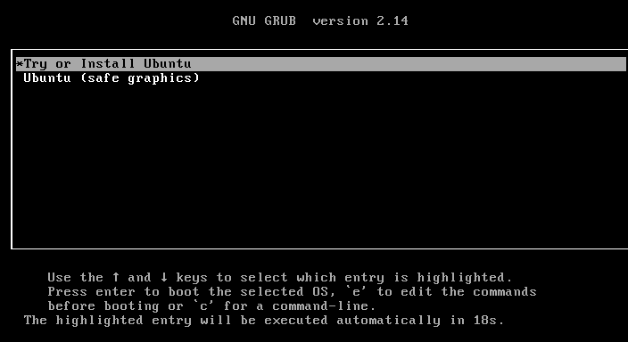
Ubuntu arranca en modo live (en vivo), es decir, se ejecuta directamente desde la ISO cargándose en la memoria RAM, sin instalar nada ni tocar el disco duro. Sirve para probar la distribución y comprobar que el hardware funciona antes de instalarla, o para rescatar un equipo que no arranca. Todo lo que hagas en modo live se pierde al apagar.
Después de elegir el idioma, la accesibilidad y el teclado, el instalador pregunta qué quieres hacer con Ubuntu: elige Instalar Ubuntu (si eliges Probar Ubuntu, puedes instalarlo después con el icono de instalación del escritorio)
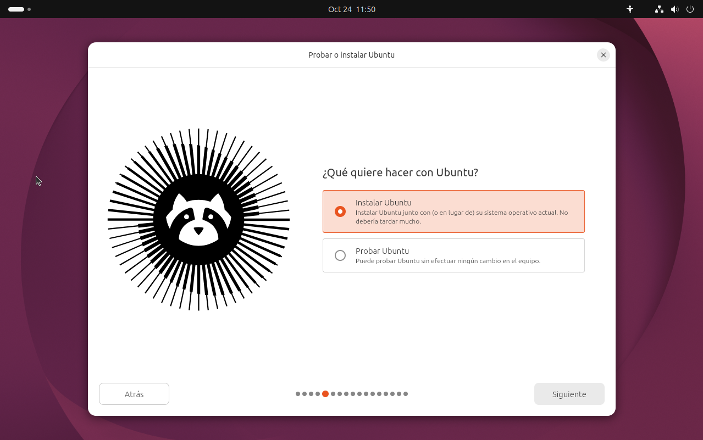
Elige Instalación interactiva, la Selección predeterminada de aplicaciones (lo esencial) y marca Instalar software de terceros (controladores de gráficos y wifi y formatos multimedia adicionales)
En ¿Cómo quieres instalar Ubuntu? elige Instalación manual, para hacer nosotros las particiones (con Borrar disco e instalar Ubuntu el instalador las hace él solo):
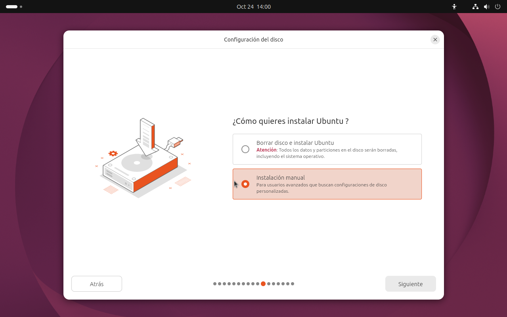
Haz las siguientes particiones:
Tamaño
Formato
Punto de montaje
60 GB
ext4
/El resto
ext4
/homeDebería quedarte algo así:
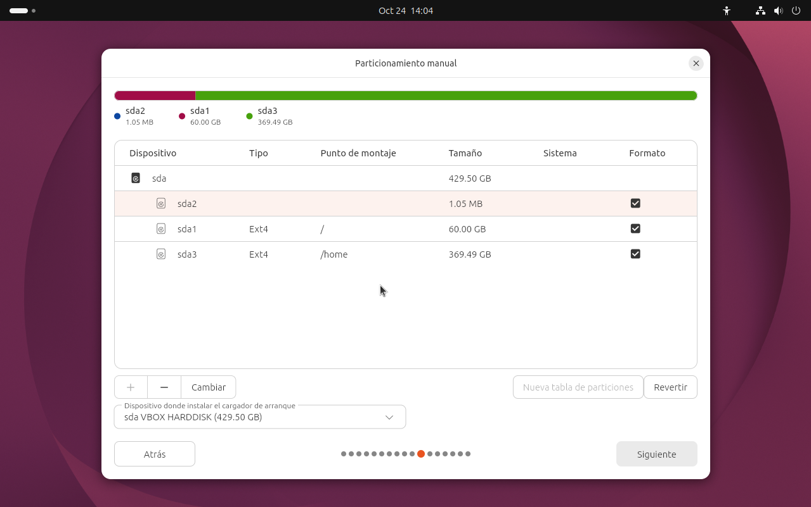
Fíjate en estos detalles:
La partición sda2, de 1 MB, sin tipo ni punto de montaje, no la hemos creado nosotros: la añade el instalador automáticamente al elegir el disco en Dispositivo donde instalar el cargador de arranque. Es una partición bios_grub, sin sistema de archivos, donde GRUB guarda parte de su código para poder arrancar en una máquina sin EFI.
Aunque sda2 está físicamente al principio del disco, se llama sda2 porque los números se asignan por orden de creación, y el instalador la ha creado después de sda1.
El disco aparece con 429,50 GB, aunque en VirtualBox pusimos 400 GB. VirtualBox cuenta en GiB (1 GiB = 2³⁰ bytes) y el instalador en GB (1 GB = 10⁹ bytes): 400 GiB son 429,5 GB.
Nota
Si hubiéramos elegido Borrar disco e instalar Ubuntu, el instalador nos preguntaría además si queremos cifrar el disco (con LUKS). Cifrar significa que todo lo que se guarda en el disco se escribe codificado, y para poder leerlo hay que meter una contraseña cada vez que arranca el equipo (o guardar la clave en el chip TPM de la placa base). Así, si alguien roba el ordenador o saca el disco, no puede leer los datos. Es muy recomendable en un portátil, pero en una máquina virtual de prácticas solo añade una contraseña más al arrancar, y si se olvida se pierde todo lo que hay en el disco.
Crea la cuenta con estos datos y deja marcado Solicitar mi contraseña para acceder:
Su nombre y nombre de usuario: tunombre
Nombre del equipo: Ubuntu26
Contraseña: alumno
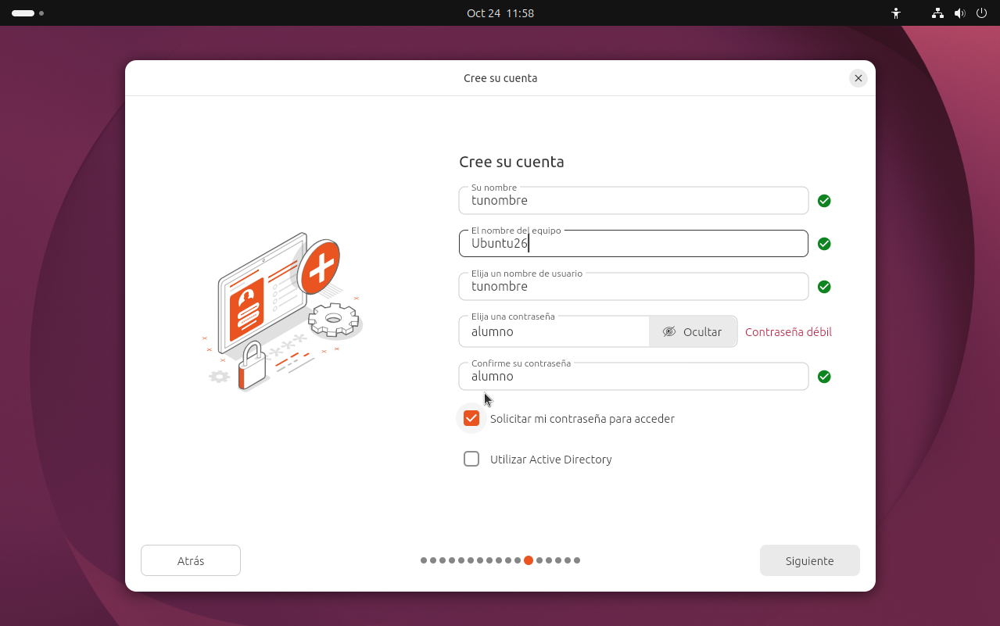
Durante la instalación no se configura la red. Cuando termines, inicia Ubuntu y configúrala como siempre: pon la IP 10.4.X.Y/8 (máscara 255.0.0.0), puerta de enlace 10.0.0.2 y DNS 8.8.8.8. Si haces los ejercicios con un portátil, deja la IP por DHCP.
Fíjate en que no hemos hecho partición de intercambio (swap). Antes era obligatorio reservar una partición para la swap, pero desde hace años Ubuntu crea en su lugar un archivo de intercambio (
/swap.img) dentro de/. Un archivo es más cómodo que una partición: se puede agrandar, encoger o quitar sin tocar las particiones del disco. Abre una terminal y ejecuta:swapon --show¿Dónde está el área de intercambio? ¿Es una partición? (ayuda: El área de intercambio (swap))
Sube el pantallazo1, donde se vean la salida de
swapon --show, la IP que has puesto (10.4.X.Y), las particiones del disco duro y la memoria. Para ello abre una terminal, la configuración de red (desde Configuración o directamente desde , en la parte derecha de la barra superior del escritorio), Discos y Recursos (el monitor del sistema). Si no te cabe todo en uno, sube los que necesites (pantallazo1a, pantallazo1b…).Ejemplo de pantallazo:
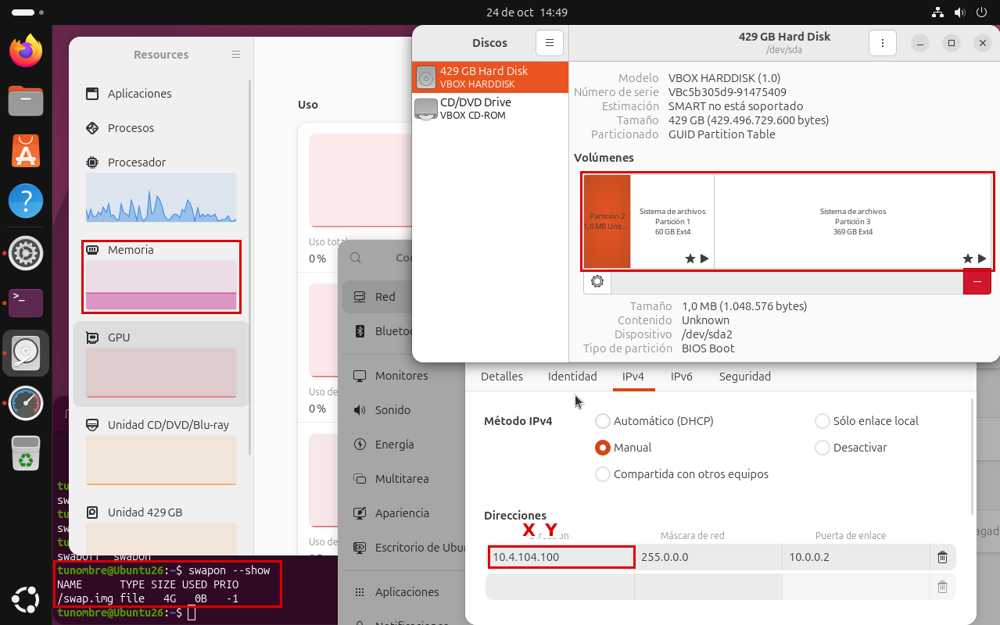
Comprueba que tienes internet. En una terminal ejecuta:
ip a ping -c2 8.8.8.8
y sube el pantallazo2, donde se vean la IP de la tarjeta de red y la respuesta del ping


Importante
Antes de seguir, apaga la máquina y exporta MV Ubuntu 26.04 a un archivo OVA (Archivo / Exportar servicio virtualizado) y guárdalo en un USB externo, no en el ordenador de clase, para no llenar su disco duro. Así tendrás la máquina recién instalada y podrás importarla cuando la necesites.
Después crea una clonación enlazada de MV Ubuntu 26.04 y continúa los ejercicios con el clon enlazado.
Ejercicio 03. Programas
Cambiar el fondo de escritorio
Inicia sesión con el usuario tunombre (en el clon enlazado) y cambia el fondo de escritorio. Se puede hacer de dos formas:
Con el botón derecho del ratón sobre el escritorio, eligiendo Cambiar fondo…
Desde Configuración / Apariencia, en el apartado del fondo, donde puedes elegir una de las imágenes que trae Ubuntu o añadir una tuya
El fondo es una preferencia de cada usuario: si entras con otro usuario, verás que mantiene el fondo por defecto. El fondo nuevo se tiene que ver en los pantallazos3 y 4.
Instalar programas utilizando el entorno gráfico
Desde el App Center (en versiones anteriores, Ubuntu Software) es posible buscar, instalar, desinstalar y actualizar las aplicaciones de los repositorios de Ubuntu. Estos repositorios son sitios web donde se almacenan los paquetes que, una vez descargados, instalan el software en el ordenador. Inicialmente Ubuntu tiene una serie de repositorios oficiales, mantenidos por el equipo de Ubuntu.
Crea una carpeta en el escritorio con tu nombre. Busca en el App Center un programa llamado VLC, instálalo, ábrelo y sube el pantallazo3, en el que se vean el programa y la carpeta con tu nombre.
Instalar programas usando la línea de comandos
Para instalar paquetes desde la terminal en Ubuntu usaremos APT (Advanced Packaging Tool), un conjunto de herramientas para la gestión de paquetes que facilita la actualización, instalación y eliminación de programas. La orden que usaremos es apt; también existe apt-get, la orden antigua, que hace lo mismo y se sigue usando en los scripts porque su salida no cambia entre versiones.
Lo primero es actualizar la lista de paquetes de los repositorios.
apt updateno instala ni actualiza ningún programa: solo descarga de los repositorios la lista de paquetes disponibles y sus versiones, para que el sistema sepa qué hay de nuevo:sudo apt update
Para ver qué paquetes tienen versiones nuevas:
apt list --upgradable
Después aplica las actualizaciones.
apt upgradesí instala las versiones nuevas de los programas que ya tienes, comparando lo que hay instalado con la lista que ha descargadoapt update(por eso siempre se ejecuta primeroupdatey despuésupgrade). Solo actualiza los paquetes dentro de la misma versión de Ubuntu y nunca desinstala nada:sudo apt upgrade
Nota
Si aparece el error
Could not get lock /var/lib/dpkg/lock-frontend, es que Ubuntu está instalando actualizaciones automáticas en segundo plano: espera unos minutos y vuelve a intentarlo.Para instalar un programa se indica el paquete principal y APT busca sus dependencias y pide confirmación. Se pueden instalar varios paquetes a la vez separando sus nombres con espacios:
sudo apt install tree
Los repositorios que usa APT están en el directorio /etc/apt/sources.list.d/ (en Ubuntu, en el archivo ubuntu.sources). En versiones antiguas se usaba el archivo /etc/apt/sources.list.
Cuando termines, ejecuta desde la terminal el comando tree sobre tu Escritorio y sube el pantallazo4.
Ejercicio 04. Usuarios con entorno gráfico
Para añadir usuarios con el entorno gráfico ve a Configuración / Sistema / Usuarios, desbloquea con tu contraseña si te lo pide (crear usuarios necesita permisos de administrador), pulsa Añadir usuario y crea los usuarios:
grafico_tu_nombre_01
grafico_tu_nombre_02
grafico_tu_nombre_03
grafico_tu_nombre_04
Si el ejercicio se hace entre dos personas, usa el nombre de las dos.
Al crearlos:
Solo grafico_tu_nombre_02 será administrador: actívale la opción Administrador y a los demás déjala desactivada. Un usuario administrador puede usar
sudoy cambiar todo el sistema, así que solo se le da a quien de verdad lo necesita. Al resto se le dejan los permisos mínimos para trabajar.En la contraseña, elige que el usuario la establezca en su primer inicio de sesión: así no tienes que inventarte una contraseña y decírsela, sino que la primera vez que entre cada usuario el sistema le pedirá que ponga la suya.
Cuando termines, sube el pantallazo5, con los cuatro usuarios que aparecen en la configuración del sistema, como se ve a continuación (hazlo antes de seguir, porque luego borraremos dos de ellos):

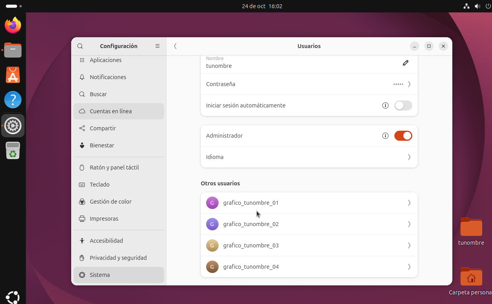
Ahora vamos a ver para qué sirve cada tipo de cuenta. A cada usuario le toca un papel:
Usuario |
Para qué lo usamos |
|---|---|
grafico_tu_nombre_01 |
Usuario estándar (sin permisos de administrador) |
grafico_tu_nombre_02 |
Administrador |
grafico_tu_nombre_03 |
Lo borraremos conservando sus archivos |
grafico_tu_nombre_04 |
Lo borraremos eliminando sus archivos |
Usuario estándar
Cierra la sesión y entra con grafico_tu_nombre_01. Como es la primera vez, el sistema te pedirá que le pongas una contraseña. Tiene que tener al menos 8 caracteres (a diferencia del instalador, aquí no deja poner una contraseña débil como alumno): usa, por ejemplo, @lumn001
Ve a Configuración / Sistema / Usuarios e intenta crear un usuario nuevo. ¿Puedes?
Abre una terminal y ejecuta:
sudo apt install cowsay
¿Qué mensaje aparece? ¿Por qué?
Sube el pantallazo6, donde se vean el intento de crear un usuario y el mensaje de
sudo
Usuario administrador
Cierra la sesión y entra con grafico_tu_nombre_02 (ponle la contraseña @lumn002) y repite lo mismo: intenta crear un usuario y ejecuta
sudo apt install cowsay. ¿Qué cambia?Ejecuta en la terminal:
groups grafico_tu_nombre_01 groups grafico_tu_nombre_02
¿Qué grupo tiene grafico_tu_nombre_02 que no tiene grafico_tu_nombre_01? Hacer administrador a un usuario, en realidad, es meterlo en ese grupo.
Sube el pantallazo7, donde se vean la instalación con
sudoy la salida de los dosgroups
Borrar usuarios
Vuelve a entrar con tunombre. En Configuración / Sistema / Usuarios, entra en grafico_tu_nombre_03, pulsa Eliminar usuario y elige conservar sus archivos
Haz lo mismo con grafico_tu_nombre_04, pero esta vez elige eliminar sus archivos
Abre el administrador de archivos y ve a
/home. ¿Qué carpetas de usuario quedan? ¿Qué diferencia hay entre conservar y eliminar los archivos? ¿Cuándo te interesaría conservarlos?Sube el pantallazo8, donde se vea el contenido de
/homeen el administrador de archivos
Ejercicio 05. Permisos con entorno gráfico
Podemos ver los permisos de un archivo o una carpeta en sus propiedades (botón derecho del ratón / Propiedades / Permisos). Para cada carpeta se indica qué puede hacer su propietario, su grupo y los otros usuarios (el resto).
La carpeta personal
Entra con grafico_tu_nombre_01, abre el administrador de archivos e intenta entrar en
/home/tunombre. ¿Qué sucede?Vuelve a entrar con tunombre y mira los permisos de tu Carpeta personal (
/home/tunombre). ¿Qué acceso tienen los Otros usuarios? ¿Por qué crees que Ubuntu cierra por defecto la carpeta personal al resto de usuarios?Para poder hacer el resto del ejercicio, tunombre tiene que abrir su carpeta a los demás. En las propiedades de tu Carpeta personal (
/home/tunombre), en Otros usuarios, cambia el acceso a Acceder a archivos. Así el resto de usuarios podrá entrar en ella y ver lo que hay, pero no crear ni borrar nada: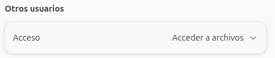
Crea en el escritorio una carpeta llamada compartida y dale a Otros usuarios el acceso Crear y eliminar archivos. En la carpeta tunombre que creaste en el escritorio en el ejercicio 03, pon para Otros usuarios el acceso Ninguno
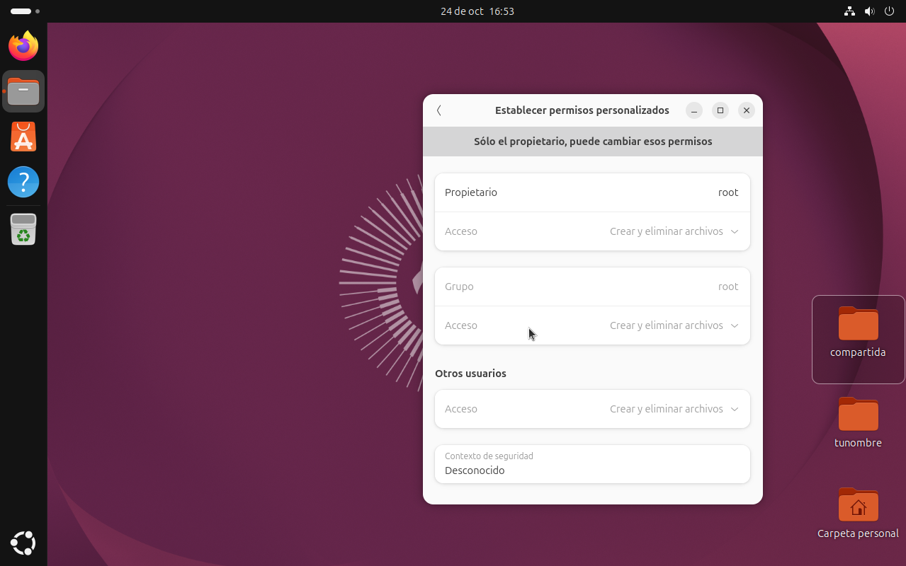


Nota
Imagina que grafico_tu_nombre_01 es otra persona que usa el mismo ordenador: no conoce la contraseña de tunombre, así que no puede entrar con su cuenta ni cambiar los permisos de sus carpetas (solo el propietario o un administrador puede cambiarlos). Solo podrá hacer lo que tunombre le haya permitido.
Entra con grafico_tu_nombre_01, abre el administrador de archivos, ve a
/home/tunombre/Escritorioy responde a las siguientes preguntas:Intenta entrar en la carpeta tunombre. ¿Qué sucede?
Intenta crear una carpeta dentro de la carpeta tunombre. ¿Qué sucede?
Intenta entrar en la carpeta compartida. ¿Qué sucede?
Intenta crear una carpeta dentro de la carpeta compartida. ¿Qué sucede?
Haz las pruebas anteriores con el entorno gráfico y después compruébalo con la línea de comandos. Con grafico_tu_nombre_01, abre una terminal e intenta crear una carpeta dentro de cada una:
mkdir /home/tunombre/Escritorio/tunombre/hola mkdir /home/tunombre/Escritorio/compartida/hola ls /home/tunombre/Escritorio/compartida/
Sube el pantallazo9, donde se vean las órdenes y lo que responde el sistema, por ejemplo:
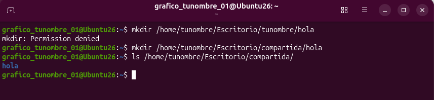

Cuando termines los ejercicios y los haya corregido el profesor, borra las dos máquinas virtuales, la original y la clonada, para no llenar el disco duro del ordenador de clase (la copia la tienes en el OVA del USB).
Fedora#

Fedora viene de Red Hat Linux. En 2003, Red Hat dejó de sacar su distribución gratuita y la dividió en dos: Red Hat Enterprise Linux (RHEL), de pago y con soporte para empresas, y Fedora (al principio Fedora Core), gratuita, hecha por la comunidad y patrocinada por Red Hat (que desde 2019 es de IBM).
Fedora funciona como el «laboratorio» de RHEL: las novedades aparecen primero en Fedora, después pasan a CentOS Stream y por último llegan a RHEL. Por eso Fedora trae siempre software muy reciente. Sale una versión nueva cada 6 meses (en abril y en octubre) y cada una tiene unos 13 meses de soporte: a diferencia de Ubuntu, no hay versiones LTS. Para instalar programas usa paquetes RPM y el gestor dnf, en lugar de los paquetes .deb y APT de Ubuntu.
Fedora tiene varias ediciones. La de escritorio es Fedora Workstation, con el escritorio GNOME, y es la que vamos a instalar. Desde Fedora 42 también hay una edición oficial con KDE Plasma (Fedora KDE Plasma Desktop).
Ejercicio 01
Desde https://fedoraproject.org/workstation/download/ descárgate Fedora Workstation 44 para la arquitectura x86_64
Crea una máquina virtual llamada MV Fedora 44 con las mismas características que la de Ubuntu: 6 GB de RAM, 4 procesadores, una memoria de vídeo de 128 MB, un adaptador de red en modo puente y un disco duro de 400 GB reservado dinámicamente
Deja desactivado EFI (Configuración / Sistema / Placa base / [ ] Habilitar EFI), igual que en Ubuntu
Inicia la máquina con la ISO y arranca en modo live, como en Ubuntu
El modo live arranca en inglés y con el teclado estadounidense, así que lo primero es poner el teclado en español (si no, no te saldrán bien la ñ, los acentos ni algunos símbolos):
Abre Settings (Configuración) y ve a Keyboard (Teclado)
En Input Sources (Fuentes de entrada) pulsa + Add Input Source, elige Spanish y después Spanish otra vez
Quita English (US) con el menú de tres puntos que tiene a la derecha, para que solo quede el español
Desde el escritorio live, abre el instalador
El instalador tiene cuatro pasos: Bienvenido/a (el idioma), Método de instalación, Configuración de almacenamiento y Revisar e instalar
En el método de instalación deja Utilizar todo el disco: esta vez no haremos las particiones a mano, sino que dejaremos que el instalador decida, para compararlo después con lo que hicimos en Ubuntu
En Revisar e instalar verás las particiones que va a crear el instalador. Fíjate bien, porque luego te preguntaremos por ellas:
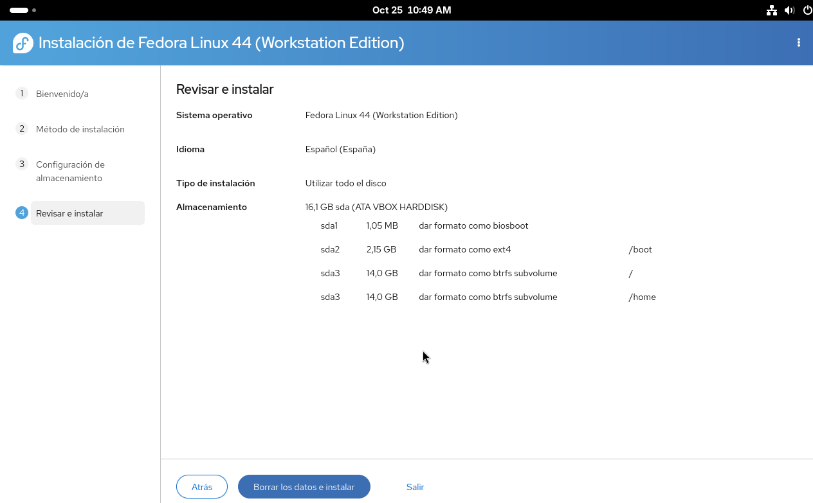
Pulsa Borrar los datos e instalar; cuando termine, quita la ISO del disco virtual y reinicia la máquina
Advertencia
Cuando termine la instalación, reinicia la máquina. Hasta entonces sigues en el modo live: Fedora se está ejecutando desde la ISO y en la memoria RAM, así que todo lo que hagas ahí (crear carpetas, configurar la red, instalar programas…) se pierde al apagar. Los ejercicios se hacen en el sistema instalado en el disco, después de reiniciar.
Antes de reiniciar, quita la ISO de la unidad de CD virtual (en el menú de la máquina virtual, Dispositivos / Unidades ópticas, quitando el disco de la unidad). Si no la quitas, la máquina volverá a arrancar desde la ISO y te encontrarás otra vez en el modo live en lugar de en el Fedora que acabas de instalar.
Al arrancar por primera vez, Fedora te pide que termines la configuración. Desactiva u omite todos los pasos hasta llegar a Acerca de usted, donde se crea la cuenta: pon tunombre como nombre completo y como nombre de usuario
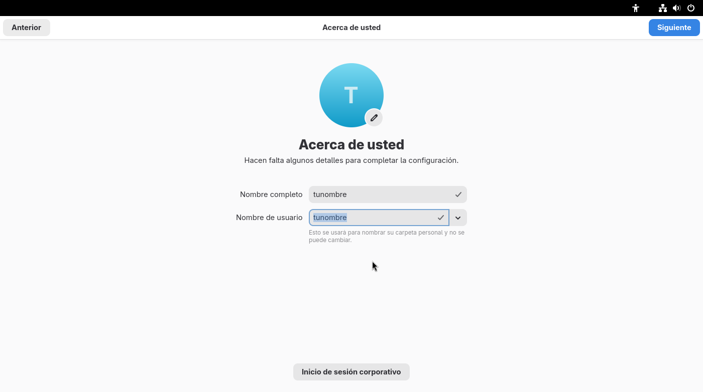
Pon la contraseña alumno
Cambia el fondo de escritorio, como hiciste en Ubuntu: con el botón derecho del ratón sobre el escritorio (Cambiar fondo…) o desde Configuración / Apariencia
Crea una carpeta en el escritorio con tu nombre. Verás que no aparece en el escritorio: el GNOME de Fedora no muestra iconos en el escritorio (Ubuntu sí, porque trae activada una extensión que lo hace). La carpeta existe, pero solo la puedes ver con el navegador de archivos, en Archivos / Escritorio (
/home/tunombre/Escritorio)Para que aparezcan los iconos en el escritorio, instala una extensión de GNOME. Las extensiones son pequeños complementos que añaden funciones al escritorio, y son la razón por la que Ubuntu y Fedora se ven distintas aunque las dos usen GNOME:
Abre Software e instala Gestor de extensiones (Extension Manager). Viene de Flathub, así que, si te lo pide, activa los repositorios de terceros
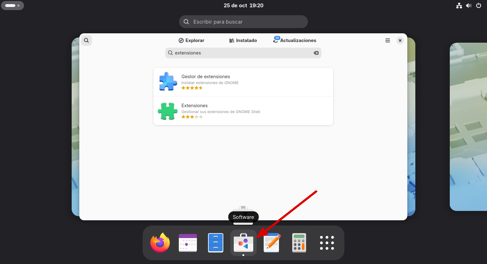
En el Gestor de extensiones, ve a la pestaña Explorar, busca Desktop Icons NG (DING) e instálala
Comprueba que ahora sí aparece en el escritorio la carpeta con tu nombre (si no aparece, cierra la sesión y vuelve a entrar)
Añade a favoritos el Monitor del sistema
Configura la red como en Ubuntu: IP 10.4.X.Y/8 (máscara 255.0.0.0), puerta de enlace 10.0.0.2 y DNS 8.8.8.8. Si haces los ejercicios con un portátil, deja la IP por DHCP
Abre una terminal y ejecuta:
lsblk -f swapon --show
Responde a las siguientes preguntas, comparando con la instalación de Ubuntu:
¿Qué particiones ha creado el instalador? ¿De qué tamaño son?
¿Qué sistema de archivos usa para
/? ¿Y para/home? ¿Están/y/homeen particiones distintas, como en Ubuntu?¿Dónde está el área de intercambio? ¿Es una partición, un archivo como en Ubuntu o otra cosa? Busca qué es zram (ayuda: El área de intercambio (swap))
Comprueba que tienes internet con
ip ayping -c2 8.8.8.8Sube el pantallazo1, donde se vean el fondo nuevo, la carpeta con tu nombre en el escritorio, el Gestor de extensiones con Desktop Icons NG (DING) instalada, el Monitor del sistema, la IP que has puesto (10.4.X.Y) y la terminal con
lsblk -f,swapon --show,ip ay elping. Si no te cabe todo en uno, sube los que necesites (pantallazo1a, pantallazo1b…). Por ejemplo: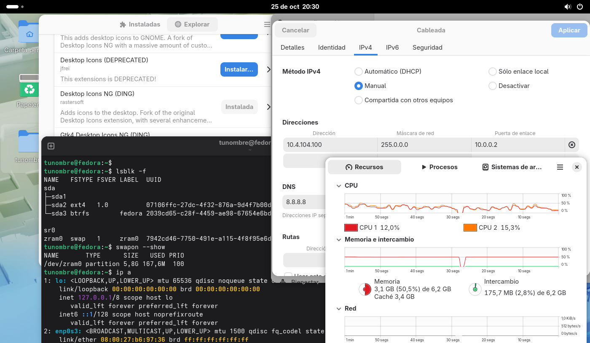


Ejercicio 02
Instalar programas utilizando el entorno gráfico
Desde Software, la aplicación de GNOME para gestionar los programas con el entorno gráfico, instala el programa Scratch. Abre un proyecto de ejemplo, ejecútalo y sube el pantallazo2.
Instalar programas usando la línea de comandos
En Fedora los paquetes se gestionan con dnf (antes se usaba yum), un gestor de paquetes para sistemas basados en RPM que instala, actualiza y elimina programas y calcula automáticamente sus dependencias. Responde a las siguientes preguntas:
¿Cómo instalarías con la línea de comandos el programa gedit?
¿Cómo actualizarías el sistema con la línea de comandos?
Instala gedit con la línea de comandos y sube el pantallazo3, donde se vean la orden que has usado y el final de la instalación.
Ejercicio 03. Usuarios con entorno gráfico
Para añadir usuarios con el entorno gráfico ve a Configuración / Sistema / Usuarios, pulsa Desbloquear… (crear usuarios necesita permisos de administrador), después Añadir usuario y crea los usuarios grafico_tu_nombre_01, grafico_tu_nombre_02, grafico_tu_nombre_03 y grafico_tu_nombre_04. Si el ejercicio se hace entre dos personas, usa el nombre de las dos.
Cuando termines, sube el pantallazo4, con los usuarios que aparecen en la configuración del sistema:

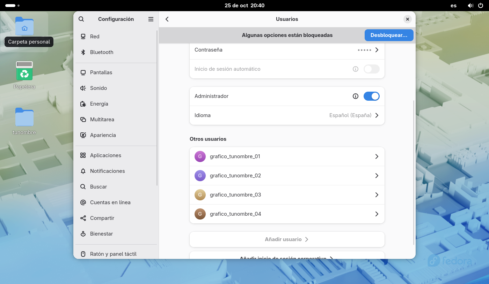
Cuando termines los ejercicios y los haya corregido el profesor, borra la máquina virtual para dejar espacio en el disco duro.
openSUSE#
openSUSE viene de SUSE, una empresa fundada en 1992 en Núremberg (Alemania), que sacó una de las primeras distribuciones de GNU/Linux. En 2003 la compró Novell, y en 2005 se creó el proyecto openSUSE: la versión gratuita y hecha por la comunidad, patrocinada por SUSE, que sigue vendiendo su versión para empresas, SUSE Linux Enterprise (SLE). Su mascota es un camaleón verde, Geeko.
openSUSE tiene dos versiones:
Leap: estable, con versiones regulares, construida sobre la misma base que SUSE Linux Enterprise. Es la que vamos a instalar. La Leap 16 cambió mucho respecto a las anteriores: estrena el instalador Agama y sustituye casi todo YaST, la herramienta clásica de administración de openSUSE, por Cockpit (administración desde el navegador) y Myrlyn (gestión de paquetes).
Tumbleweed: de actualización continua (rolling release), es decir, no tiene versiones, sino que se va actualizando siempre a lo último.
Igual que Fedora, usa paquetes RPM, pero los gestiona con zypper en lugar de dnf.
Ejercicio 01
Desde https://get.opensuse.org/leap/ descárgate openSUSE Leap 16.0 para la arquitectura x86_64
Crea una máquina virtual llamada MV openSUSE 16.0 con las mismas características que la de Ubuntu: 6 GB de RAM, 4 procesadores, una memoria de vídeo de 128 MB, un adaptador de red en modo puente y un disco duro de 400 GB reservado dinámicamente
Deja desactivado EFI (Configuración / Sistema / Placa base / [ ] Habilitar EFI), igual que en Ubuntu
Inicia la ISO y procede a la instalación desde el menú que aparece en el arranque
Acepta la licencia, pon el teclado en español y configura la IP
Selecciona el escritorio KDE Plasma
Deja la propuesta de particionamiento que hace openSUSE; en mi caso sería:
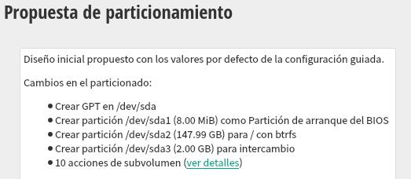
Mirando tus particiones, responde a las siguientes preguntas:
¿Dónde va a montar
/? ¿Qué espacio ocupa?¿Va a dejar una partición diferente para los datos de los usuarios?
¿Qué sistema de archivos utiliza para
/?Busca en internet qué características tiene ese sistema de archivos
Ejercicio 02
Una vez hayas respondido a las preguntas, continúa con la instalación
Crea el usuario local tunombre con contraseña alumno y deshabilita el inicio de sesión automático
Cambia el fondo del escritorio y crea una carpeta llamada tu_nombre
Crea un acceso directo del Monitor del sistema en el escritorio
Añade un acceso directo de Firefox en el panel
Sube el pantallazo1, en el que se vean la carpeta que has creado y un ping a 8.8.8.8:
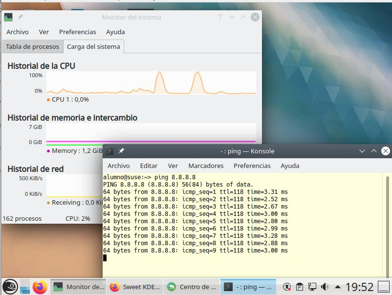

Ejercicio 03
Responde a las siguientes preguntas:
¿Qué es Myrlyn?
¿Para qué sirve?
Busca la forma de abrirlo. ¿Cómo lo has abierto?
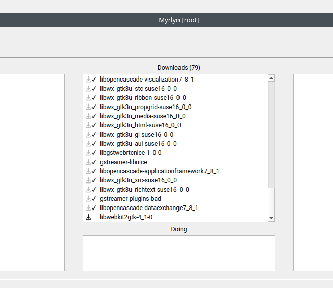

Ejercicio 04
Instalar programas utilizando el entorno gráfico
Desde Myrlyn busca el programa kicad e instálalo. Abre el programa, abre un proyecto desde una plantilla, selecciona el Arduino UNO y sube el pantallazo2, en el que aparezca la carpeta con tu nombre, por ejemplo:

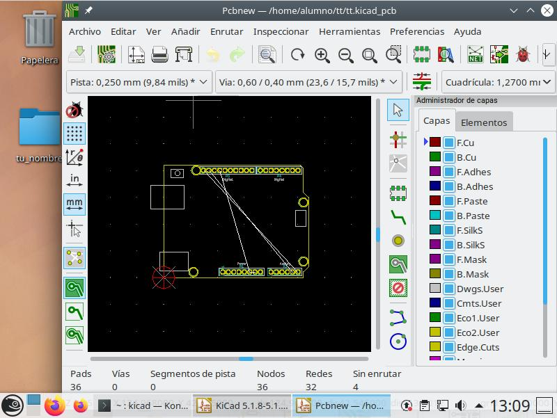
Instalar programas usando la línea de comandos
Para instalar programas desde la línea de comandos utilizaremos zypper. Igual que en Ubuntu, lo primero es actualizar:
sudo zypper update
Y para instalar un programa se indica el paquete principal y zypper busca sus dependencias:
sudo zypper install tree
Actualiza el sistema e instala el programa blender con la línea de comandos. Cuando termines, sube el pantallazo3, en el que se vean el programa, la carpeta con tu nombre y un poco de la instalación:

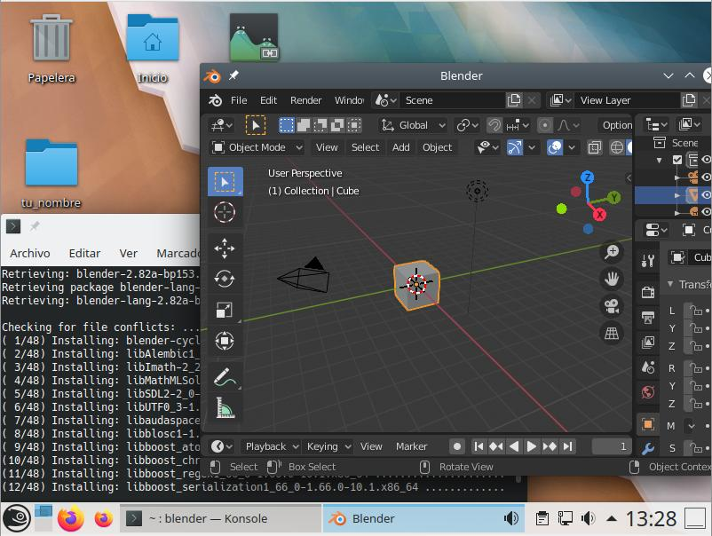
Instalar programas usando Discover
Discover es una tienda de aplicaciones que da acceso a varias categorías de aplicaciones, complementos de aplicaciones y complementos de Plasma: desde aplicaciones de accesibilidad y accesorios hasta herramientas para desarrolladores y aplicaciones educativas. También muestra las aplicaciones instaladas y es configurable. Ábrelo, busca una aplicación e instálala; por último, ábrela y sube el pantallazo4.
Ejercicio 05. Usuarios con entorno gráfico
Abre el gestor de usuarios de openSUSE y crea los siguientes usuarios:
grafico_tu_nombre_a1
grafico_tu_nombre_a2
grafico_tu_nombre_b1
grafico_tu_nombre_b2
Instala y configura Cockpit:
sudo zypper in cockpit sudo systemctl enable --now cockpit.socket sudo firewall-cmd --permanent --add-service=cockpit sudo firewall-cmd --reload
Abre en el navegador https://localhost:9090
Crea un grupo llamado grupoA y otro llamado grupoB, y mete los usuarios en los grupos
Sube el pantallazo5, como el siguiente:
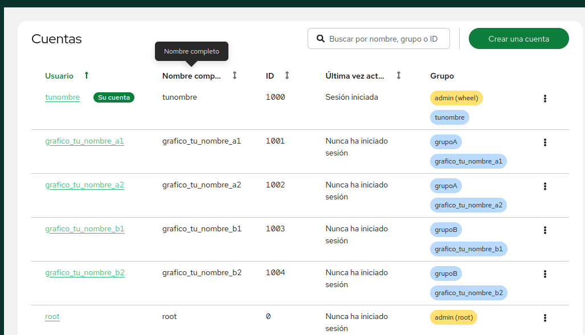

Ejercicio 06. Permisos con entorno gráfico
Podemos ver los permisos de un archivo o una carpeta en sus propiedades (botón derecho del ratón). Entra con el usuario grafico_tu_nombre_a2, crea una carpeta con ese nombre en el escritorio y dale los siguientes permisos:

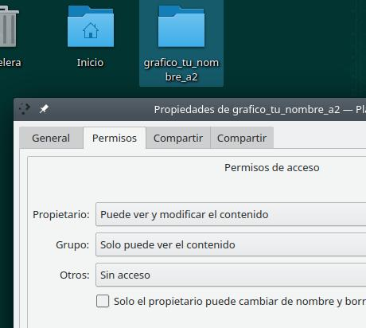
Responde a las siguientes preguntas:
Entra con el usuario grafico_tu_nombre_a1 en la carpeta que has creado e intenta hacer una carpeta nueva. ¿Puedes entrar? ¿Puedes crear una carpeta?
Entra con el usuario grafico_tu_nombre_b1 en la carpeta que has creado e intenta hacer una carpeta nueva. ¿Puedes entrar? ¿Puedes crear una carpeta?
¿Por qué sucede esto? ¿Está todo bien?
Si quisieras que el usuario grafico_tu_nombre_a1 pudiese modificar el contenido de la carpeta, ¿qué tendrías que hacer?
Cuando termines los ejercicios y los haya corregido el profesor, borra la máquina virtual para dejar espacio en el disco duro.
Linux Mint#
Linux Mint nació en 2006 en Irlanda como una distribución basada en Ubuntu, con la idea de ser más sencilla y más parecida a Windows para quien viene de él: un menú de inicio, una barra de tareas abajo y los programas habituales ya instalados. Cada versión de Mint se construye sobre una versión LTS de Ubuntu, así que comparte con ella los repositorios y APT, y tiene soporte hasta 2029 o más. También existe LMDE (Linux Mint Debian Edition), una variante basada directamente en Debian, por si algún día Ubuntu dejara de servirles de base.
Mint ha desarrollado su propio escritorio, Cinnamon, que es el principal, y también ofrece MATE (la continuación del antiguo GNOME 2) y Xfce (el más ligero, para equipos con pocos recursos).
Ejercicio 01
Desde https://linuxmint.com/download.php descárgate Linux Mint de 64 bits con el escritorio que prefieras: Cinnamon, MATE o Xfce
Crea una máquina virtual llamada MV Linux Mint con 6 GB de RAM, 4 procesadores, una memoria de vídeo de 128 MB y un disco duro de 400 GB reservado dinámicamente. Esta vez, deja el adaptador de red en modo NAT: la máquina recibe la IP automáticamente por DHCP (la 10.0.2.15) y tiene internet sin tener que configurar nada
Deja desactivado EFI (Configuración / Sistema / Placa base / [ ] Habilitar EFI), igual que en Ubuntu
Inicia la ISO y, en el menú de arranque, elige la primera opción, Start Linux Mint, que arranca el modo live (la opción OEM install es para los fabricantes que venden ordenadores con Mint ya instalado, no la uses). Desde el escritorio live, abre Install Linux Mint
Configura el idioma y haz las particiones a mano: en Más opciones, deja ~80 GB para
/, 2 GB para el área de intercambio (swap) y el resto para/home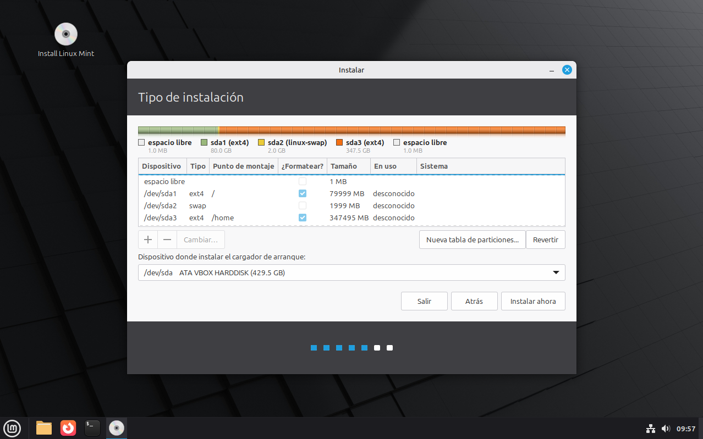
Al continuar, el instalador puede mostrar algún aviso (por ejemplo, que no encuentra una partición del sistema EFI). Nuestra máquina virtual arranca sin EFI, así que no hace falta: pulsa Continuar y sigue con la instalación.
Crea la cuenta: nombre y nombre de usuario tunombre, nombre del equipo Mint22 y contraseña alumno
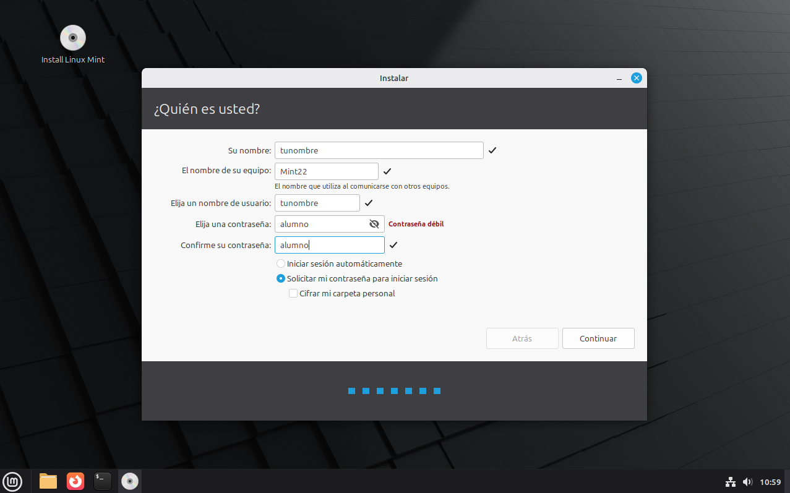
Una vez instalado, abre una terminal y ejecuta:
swapon --show¿Dónde está ahora el área de intercambio? Compara las tres distribuciones que llevamos: ¿cómo es la swap en Ubuntu, en Fedora y en Linux Mint? ¿Qué ventajas tiene cada forma? (ayuda: El área de intercambio (swap))
Cambia el fondo del escritorio y crea una carpeta llamada tu_nombre
Abre el Analizador de uso de disco, que está en Inicio / Administración / Analizador de uso de disco, y analiza
/Sube el pantallazo1, en el que se vean la carpeta que has creado, un análisis de
/y la salida deswapon --show: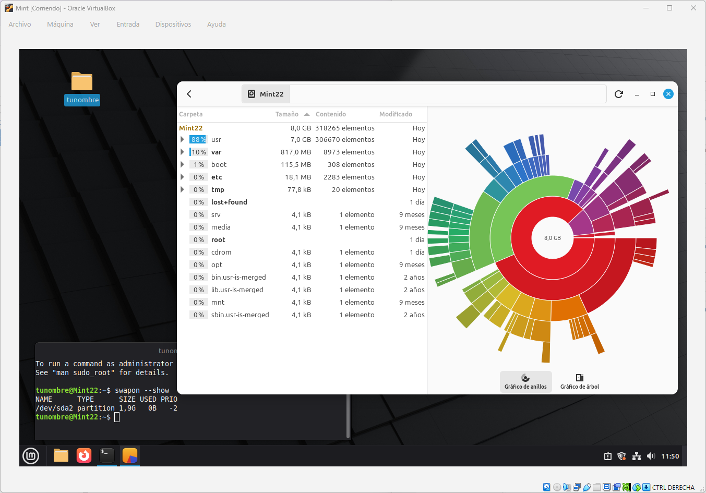


Ejercicio 02
Instalar programas utilizando el entorno gráfico
Ve a Inicio / Administración / Gestor de software, instala Stellarium, ábrelo y sube el pantallazo2. Sin entorno gráfico se puede instalar con APT, como vimos en Ubuntu.

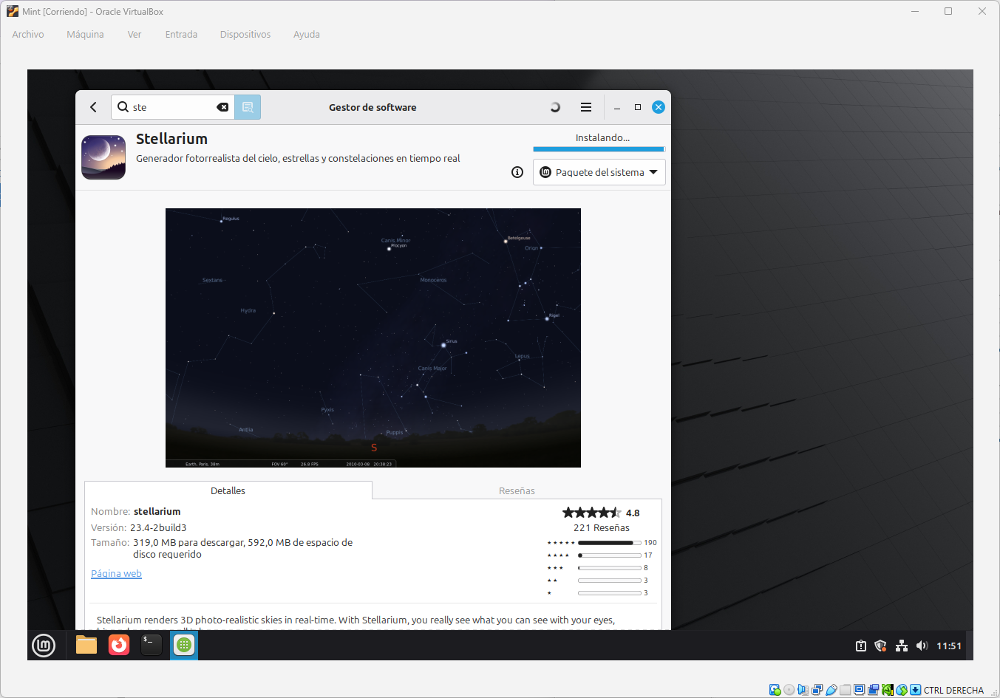
Instalar miniaplicaciones
En Inicio / Preferencias / Miniaplicaciones del escritorio, instala al menos 4 miniaplicaciones.
Si alguna miniaplicación muestra un error (por ejemplo, en la temperatura), actualiza el sistema, reinicia y vuelve a comprobarlo:
sudo apt update
sudo apt upgrade
Sube el pantallazo3, en el que se vean las miniaplicaciones del escritorio y la carpeta con tu nombre, por ejemplo:

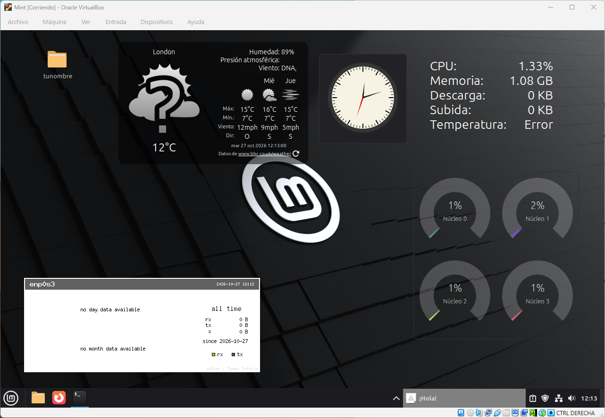
Ejercicio 03. Usuarios con entorno gráfico
Abre el gestor de usuarios, que está en Inicio / Administración / Usuarios y grupos
Crea un grupo llamado grupoa y otro llamado grupob
Dentro del grupoa crea los usuarios grafico_tu_nombre_01 y grafico_tu_nombre_02
Dentro del grupob crea los usuarios grafico_tu_nombre_03 y grafico_tu_nombre_04
Comprueba en una terminal qué usuarios tiene cada grupo:
getent group grupoa getent group grupob
Sube el pantallazo4, como el siguiente:
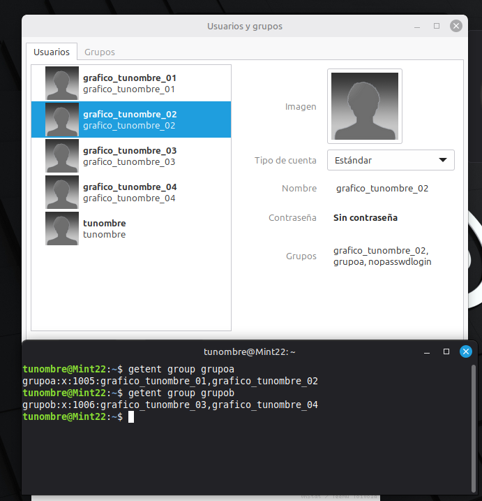

Cuando termines los ejercicios y los haya corregido el profesor, borra la máquina virtual para dejar espacio en el disco duro.
MX Linux#
MX Linux nació en 2014 de la colaboración entre dos distribuciones: antiX, una distribución muy ligera, y la comunidad de MEPIS, una distribución que se había dejado de desarrollar. Está basada en Debian estable (la versión actual, MX-25, se basa en Debian 13 Trixie), es ligera y rápida incluso en equipos antiguos, y trae sus propias herramientas de configuración, las MX Herramientas. Desde hace años es una de las distribuciones más visitadas en DistroWatch. Tiene ediciones con los escritorios Xfce (la principal), KDE Plasma y Fluxbox.
Una de sus particularidades es el sistema de inicio (init), el primer programa que arranca el núcleo y que se encarga de poner en marcha todos los demás servicios del sistema. Casi todas las distribuciones actuales usan systemd, pero MX se hizo conocida por seguir usando el clásico SysVinit. Desde MX-25 usa systemd por defecto, aunque sigue habiendo imágenes con SysVinit para quien lo prefiera.
Ejercicio 01
Desde https://mxlinux.org/download-links/ descárgate MX-25 con el escritorio Xfce para 64 bits
Crea una máquina virtual llamada MV MX Linux con 6 GB de RAM, 4 procesadores, una memoria de vídeo de 128 MB y un disco duro de 400 GB reservado dinámicamente. Deja el adaptador de red en modo NAT, como en Linux Mint
Deja desactivado EFI (Configuración / Sistema / Placa base / [ ] Habilitar EFI), igual que en el resto de distribuciones
Inicia la máquina con la ISO y arranca en modo live. En el escritorio verás el icono del instalador, Installer
Al abrir el instalador, lo primero es poner el teclado en español: pulsa Change Keyboard Settings, añade es Spanish con el botón + y súbelo para que quede el primero de la lista
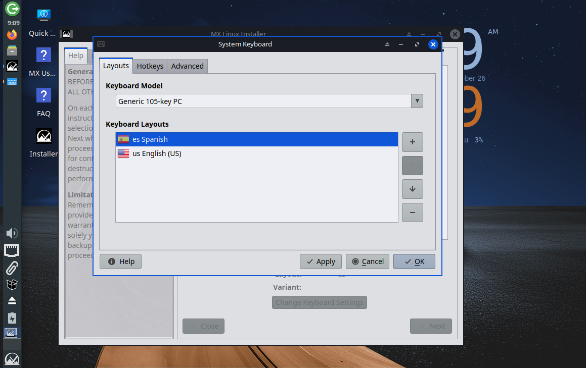
En Select type of installation marca Customize the disk layout, para hacer las particiones a mano
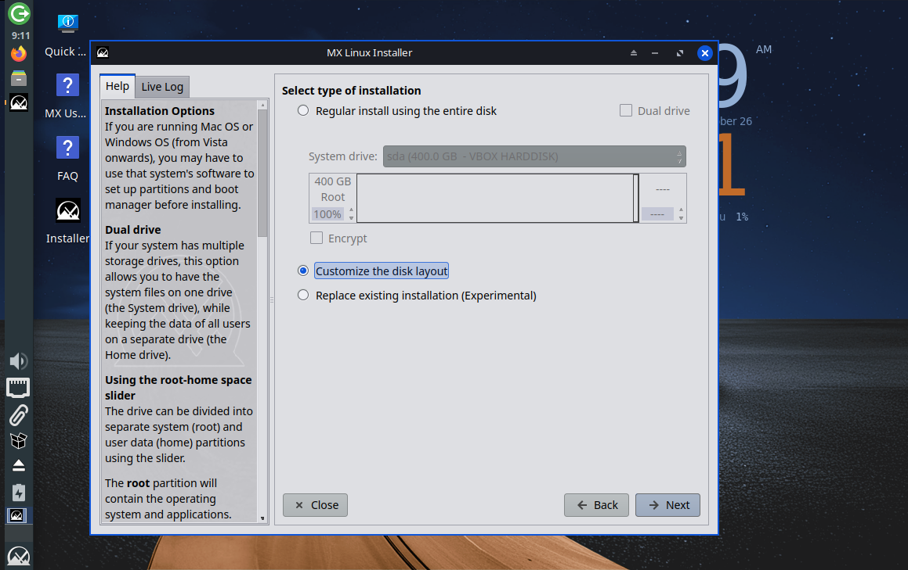
Haz las siguientes particiones. En la columna Use For se indica para qué se usa cada una: fíjate en que la de 2 GB tiene que ser swap
Tamaño
Formato
Use For
80 GB
ext4
/2 GB
swap
swap
El resto
ext4
/home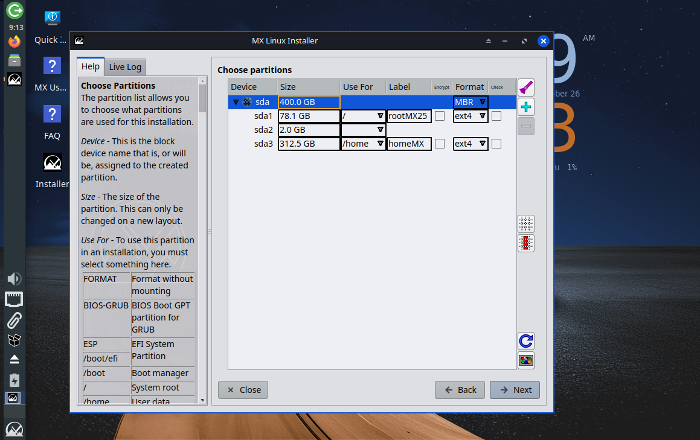
Durante la instalación, el instalador de MX te ofrece además crear un archivo de intercambio (swap file) o usar zram: son las otras dos formas de swap que hemos visto en Ubuntu y en Fedora. Como ya tienes una partición swap, no marques ninguna de las dos
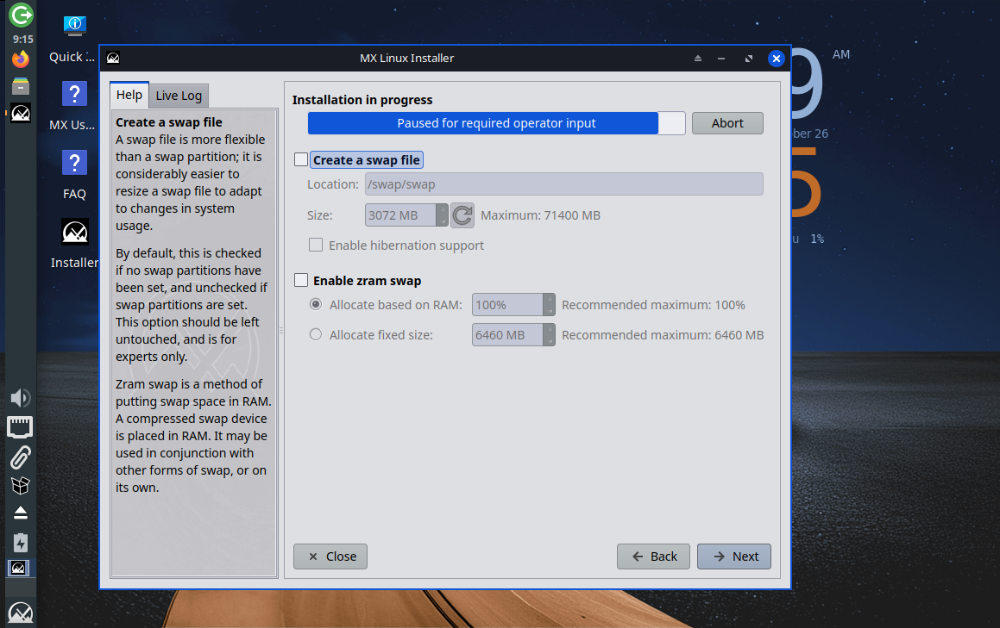
En el nombre del equipo pon mx y en el dominio tunombre.dom
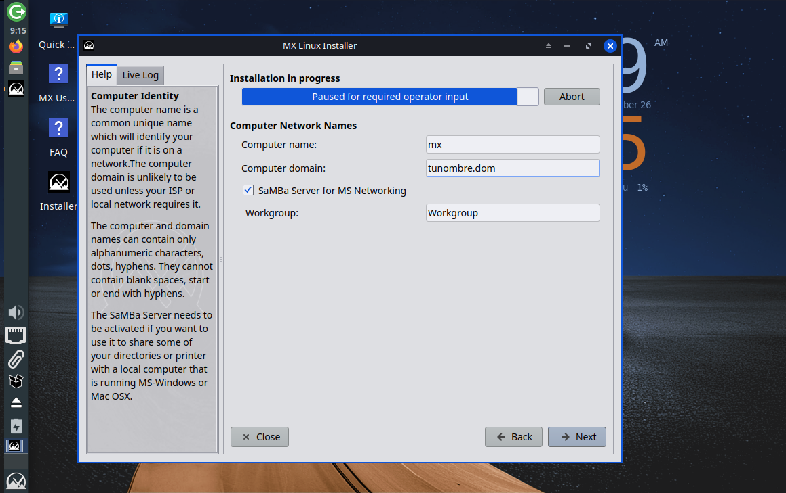
En la localización elige España - español de España y la zona horaria Europe / Madrid
Crea el usuario tunombre con la contraseña alumno y no actives la cuenta de root (Root (administrator) Account): en MX las tareas de administración se hacen con
sudodesde el usuario normal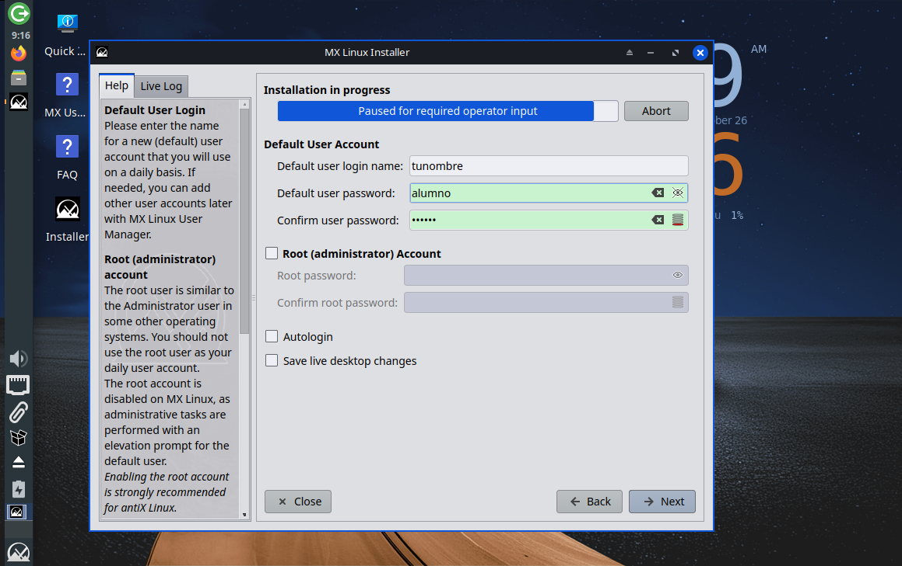
Cuando termine la instalación, quita la ISO de la unidad de CD virtual y reinicia la máquina
Una vez instalado, cambia el fondo del escritorio y crea una carpeta con tu_nombre
Crea un acceso directo de la Información rápida del sistema: en Inicio / MX Herramientas / Información rápida del sistema, botón derecho del ratón y Añadir al escritorio
Sube el pantallazo1, en el que se vean la carpeta que has creado y un informe rápido del sistema:
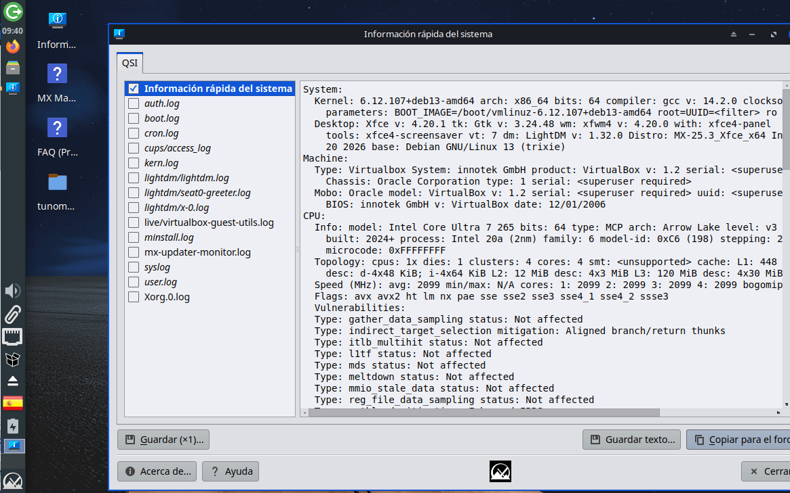


Ejercicio 02
Instalar programas
Para instalar programas con el entorno gráfico ve a Inicio / MX Herramientas / MX Instalador de paquetes y, en la pestaña Aplicaciones Populares, instala Kdenlive. Con la línea de comandos se utiliza APT, igual que en Ubuntu: instala GIMP.
Sube el pantallazo2, en el que se vean los dos programas instalados y la carpeta con tu nombre en el escritorio:

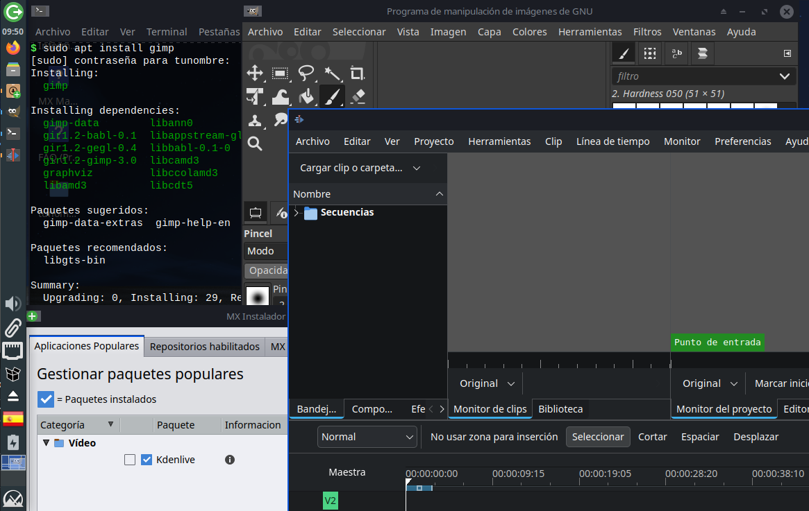
Ejercicio 03
Conky es un programa que muestra en el escritorio información del sistema: la hora, el uso de la CPU, la memoria, la red, el disco… Actívalo con Conky Toggle y configúralo con MX Conky (los dos están en Inicio / MX Herramientas), donde puedes elegir el aspecto entre varios modelos. Sube el pantallazo3, como este:

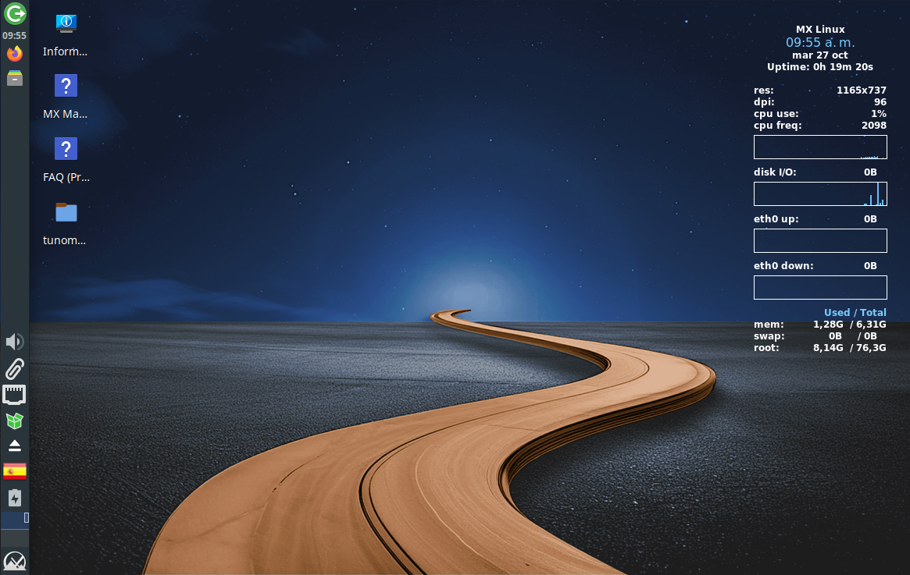
Cuando termines los ejercicios y los haya corregido el profesor, borra la máquina virtual para dejar espacio en el disco duro.
Distrowatch#
https://distrowatch.com/ es una web que recoge información de cientos de distribuciones de GNU/Linux (y de otros sistemas libres, como los BSD): en qué distribución se basa cada una, qué escritorios ofrece, qué gestor de paquetes y qué sistema de inicio usa, cada cuánto saca versiones… y publica las novedades de cada una. Es muy conocida por su clasificación (Page Hit Ranking), pero hay que tener en cuenta que cuenta las visitas a la página de cada distribución en DistroWatch, no los usuarios reales que la usan.
Ejercicio 01
Ve a https://distrowatch.com/ y elige una distribución de GNU/Linux que no hayamos instalado
Nota
Ten cuidado con distribuciones como Arch Linux o Gentoo: se instalan casi enteras a mano desde la terminal, así que solo son recomendables si quieres un reto.
Crea una máquina virtual con las mismas características que en el resto de distribuciones: 6 GB de RAM, 4 procesadores, una memoria de vídeo de 128 MB, un adaptador de red en modo NAT y un disco duro de 400 GB reservado dinámicamente. Deja EFI desactivado, salvo que la distribución lo necesite para arrancar
Instálala y, cuando termine la instalación, iníciala y rellena la siguiente tabla con la información de DistroWatch y de tu instalación:
Pregunta
Tu distribución
¿En qué se basa? (Debian, Ubuntu, Fedora, Arch, independiente…)
Gestor de paquetes (APT, dnf, zypper, pacman…)
Escritorio que has elegido
Sistema de inicio (systemd, SysVinit, OpenRC…)
¿Tiene versiones fijas, versiones LTS o es rolling release?
¿Qué swap usa? (
swapon --show)Sube el pantallazo1, donde se vean las particiones que has hecho y la salida de
swapon --show
Ejercicio 02
Instala un programa, con el entorno gráfico o con la línea de comandos, e indica qué gestor de paquetes has usado. Sube el pantallazo2, donde se vea el programa instalado.
Ejercicio 03
Crea dos usuarios llamados tunombre_01 y tunombre_02 y sube el pantallazo3, donde se vean los dos usuarios.
Cuando termines los ejercicios y los haya corregido el profesor, borra la máquina virtual para dejar espacio en el disco duro.
Cuestionario de instalaciones#
Para repasar lo que has visto en las instalaciones, haz el Cuestionario instalaciones.